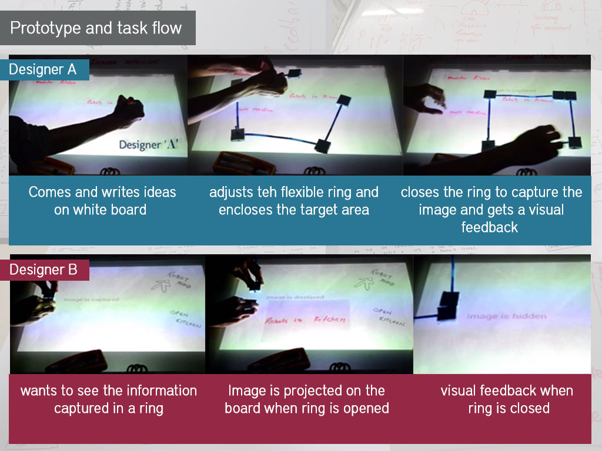
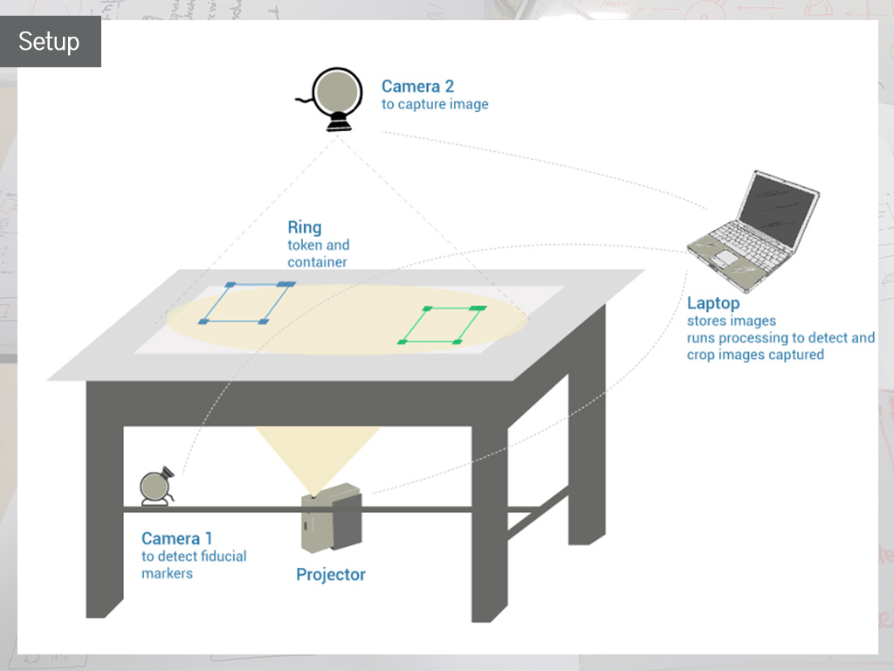

Overview
Project overview
Duration: Jan - April 2014
Team: Vikas Goel, Safinah Ali, Neeraj Talukdar, Bhawna Agarwal, Keyur Sorathia
Prototyping: Processing language (JAVA environment)
Responsibilities: Needfinding, Conceptualization, Design, Prototyping
Publication: Published in the ACM Proceedings of the India HCI 2014 Conference on Human Computer Interaction
The 'what'
Introduction
CaptuRing is an adjustable tangible tool for designers to support and augment their brainstorming process. The tool enables selective capturing of required information from a table-top surface meant for brainstorming, storing it and accessing the stored information using intuitive interactions. This provides a framework to relook and reinvestigate upon previous brainstorming sessions to creatively build on each other’s ideas while eliminating the need of everyone being present at the same time.
Framework
Capturing provides a platform for collective brainstorming for multiple designers to participate in brainstorming activities with or without their physical presence and involvement at the same time. The CaptuRing setup consists of -
- a table top (brainstorming surface)
- three types of CaptuRings - Blue CaputuRing (the ‘Parent ring’), Green CaptuRing (the ‘child ring’) and Red CaptuRing (the ‘negation ring’)
- a bunch of connectors (indication markers)
{kind=link}
Task flow
{kind=link}

The scenario is of a corporate design office working collaboratively on a project. ‘Designer A’ individually starts brainstorming on this project by delineating his ideas on a tabletop (a brainstorming surface). Designer is free to bring any object on the surface to support his idea. To store a particular idea from a bunch of ideas on the table top, he adjusts the blue CaptuRing, which is flexible and can be elongated, so as to completely enclose the idea. Once ring is closed, enclosed area is captured and mapped (stored) to the ring and a visual feedback ‘Image is captured’ is projected on the tabletop.
Subsequently, ‘Designer B’ wishes to contribute to the brainstorming. He opens the blue CaptuRing on the tabletop to see the stored idea. The image which was mapped to that ring is projected on the surface at the same location where the ring is opened. After seeing the idea, he closes the CaptuRing. On doing so, the image goes away and a feedback ‘Image is hidden’ is projected. He wants to build upon this idea. To do so, he writes the supporting ideas, captures it with a green CaptuRing and connects it to the parent CaptuRing with the help of a connector. He also puts an indication marker in stack of blue CaptuRing to indicate that someone has reviewed this particular idea. These indication markers helps in keeping track of how many people have actually contributed to an idea while still maintaining the anonymity.
‘Designer C’ is interested to see the progress in brainstorming. He opens the existing CaptuRings to see the captured ideas. He writes his critiques on the tabletop, captures it with a red CaptuRing and connects it to the existing Blue CaptuRing. Additionally, he adds one more indication marker in the stack. This allows everyone in the team to collaboratively build up and comment on the ideas of their peers.
The 'how'
Prototyping
The system was implemented in the Processing language. An overhead camera captures the image of the tabletop (the brainstorming surface) using the processing video library. Additionally, I used the reacTIVision technology to identify the position of the rings (tagged with fiducials) on the table top. The fiducials are tracked by an additional camera kept at the bottom. Thus the system uses two cameras and a projector for displaying the cropped image when the ring is opened. We have defined the coming together of the two fiducials on the open ends of the ring as the trigger for the second camera which captures the relevant data, thus using the analogy of enclosing or capturing interaction in real-life to capture the image. So when the user brings the two open ends together over the target area on the board that needs to be stored, the overhead camera is triggered and the image of the entire board is captured. The third fiducial acts as a reference for the width of the required image the enclosed area and the fourth fiducial refers to the height. We thus calculate the rectangular area enclosed within the ring and the image is cropped accordingly. Hence, dimensions of the CaptuRing can be altered orthogonally which directly affect the X-Y co-ordinates of the fiducials, thus allowing a flexible cropping system.
{kind=link}